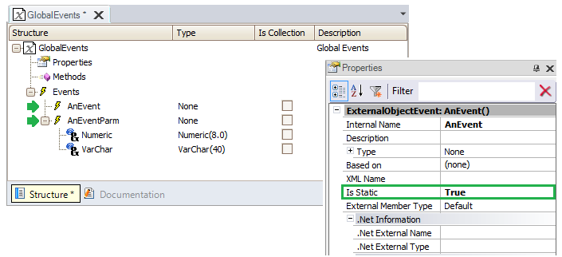

Usually, in smart device applications, an end-user executes a certain sequence of actions on a panel whose effect should alter the information displayed on another panel once the end-user access it. Here the primary activity is the reaction to the receipt of semantically significant signals (a.k.a. 'events'). This goal can be achieved in GeneXus through the Global Events concept. Steps to use them1) Look for the GlobalEvents external object, under GeneXus/Common folder in the Root Module of the Knowledge Base. 2) In the Events section, create as many events as you need simply by pressing "Enter" on the node. For each of them you must do two things:
Optionally, you can enter a parameter sequence and the Domain each one belongs to.  3) Once the events are created, you can call or catch them from Panels or Work With for Smart Devices objects, as shown in the Usage Example section below. Usage exampleSuppose you have two independent Panels for Smart Devices called “Sender” and “Receiver”. The “Sender” will send information to the “Receiver” to update its data. The following table shows how they interact in this simple example.
Once the “Sender” and “Receiver” panels are designed, you need to create a new panel with two components and embed the panels in them to see the results in-line.
Scope
AvailabilityThis feature is available as from GeneXus 15.
|
| Backlinks | |
| GeneXus Core module | Global Events |
| SD Component control |